原文连接:https://www.cnblogs.com/huiwei13/p/11797107.html
一、Android studio 3.5安装详解
1．安装IDE
安装前的准备：已安装过的需要卸载，并且删除C:\user\yourname\ 下.android ，gradle， .AndroidStudio 3个文件夹。
1.1 cmd命令窗口输入ping dl.google.com，得到ip:203.208.40.39，把dl.google.com和dl-ssl.google.com都指向这个IP，具体：打开或新建C:\Windows\System32\drivers\etc 中的hosts文件，在最后增加以下内容：
203.208.40.39 dl-ssl.google.com
203.208.40.39 dl.google.com
修改好hosts文件之后，在cmd命令窗口输入ipconfig /flushdns清除缓存DNS。
1.2访问安卓中文社区官网 https://www.androiddevtools.cn，下载android-studio-ide-191.5791312-windows.exe。安装很简单，直接一路点击下一步即可。
1.3 运行，初次安装会提示未安装Android SDK: 点取消，点No。
2. 安装Android SDK
点击菜单file->Settings,如下图，在SDK Platforms中，选择你想要的版本，点应用，接受，安装。
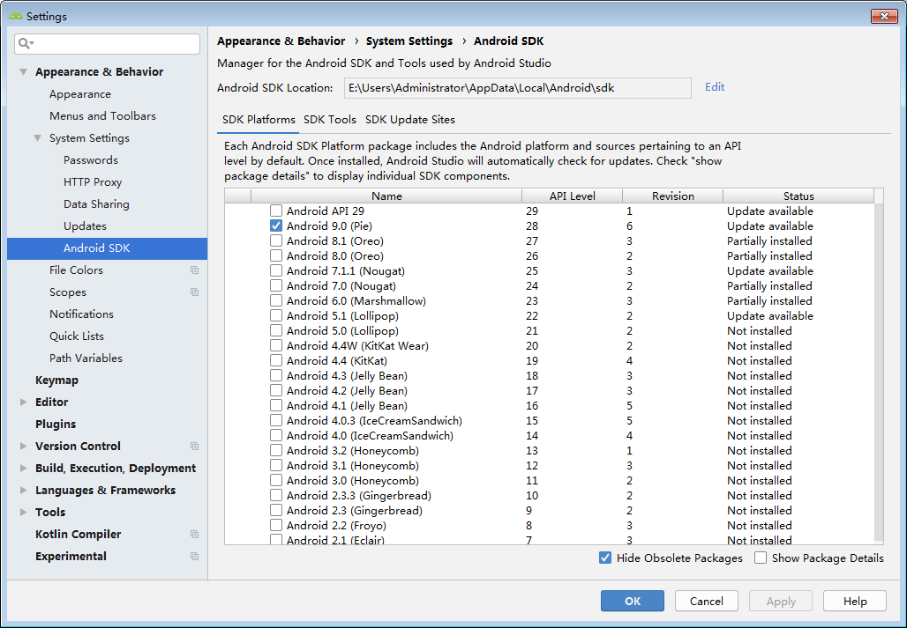
切换到SDK Tools，按下图选择，点Ok，安装。
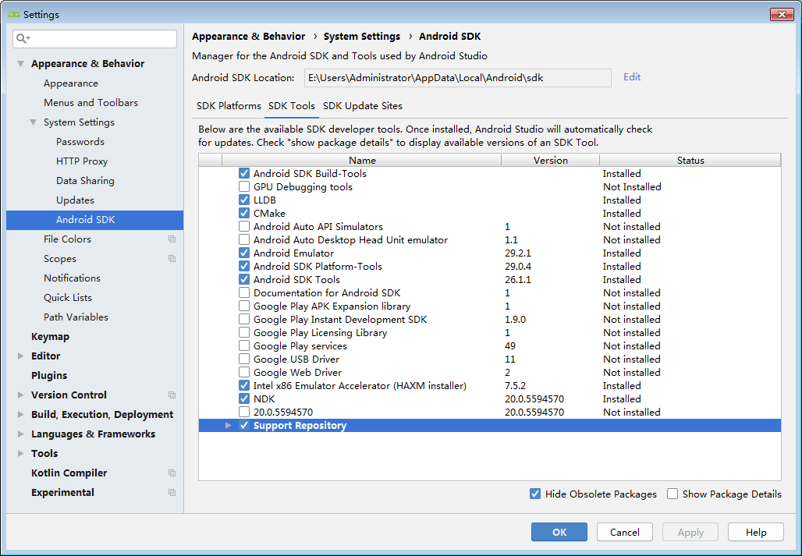
二、HyperFT项目的环境搭建
1、HyperFT项目下载
github地址：https://github.com/zeusees/HyperFT
gitee地址：https://gitee.com/huiwei13/HyperFT
通过git方式或者下载压缩包的方式进行项目下载。
2、第三方库下载
opencv:4.1.1
https://github.com/opencv/opencv/releases/download/4.1.1/opencv-4.1.1-android-sdk.zip
ncnn:20190611 bade132
https://github.com/Tencent/ncnn/releases/download/20190611/ncnn-android-lib.zip
三、HyperFT项目编译设置
1、启动AS打开HyperFT的Prj-Android项目

2、项目报错及解决方法
a、项目路径出现中文
打开项目之后报如下错误
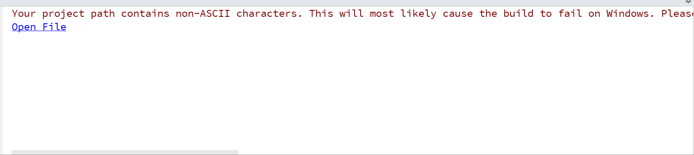
错误原因：引用项目的路径中包含中文
解决方法：
把现有的项目路径修改至不包含中文。
b、报NDK错误
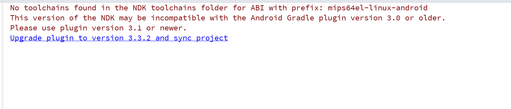
编译提示"No toolchains found in the NDK toolchains folder for ABI with prefix: mips64el-linux-android"
网上也有解决办法，下载旧版的NDK，将其中的toolchain复制到新版的NDK中
但是感觉这种方式，不是解决的正道。
经过对新版NDK的研究，发现NDK的更新记录里有记载
This version of the NDK is incompatible with the Android Gradle plugin
version 3.0 or older. If you see an error like
`No toolchains found in the NDK toolchains folder for ABI with prefix: mips64el-linux-android`,
update your project file to [use plugin version 3.1 or newer]. You will also
need to upgrade to Android Studio 3.1 or newer.
也就是说新版本的NDK与3.0及以前旧版的Android Gradle plugin插件不兼容
解决方法：修改build.gradle中的红字部分，改为3.1以上版本即可
dependencies {
classpath 'com.android.tools.build:gradle:3.3.2'
// NOTE: Do not place your application dependencies here; they belong
// in the individual module build.gradle files
}
3、修改CMakeLists.txt文件
cmake_minimum_required(VERSION 3.1)
project(FaceTracking-lib)
set(CMAKE_CXX_FLAGS "${CMAKE_CXX_FLAGS} -std=c++11")
set(CMAKE_C_FLAGS "${CMAKE_CXX_FLAGS} -fopenmp")
set(CMAKE_CXX_FLAGS "${CMAKE_CXX_FLAGS} -fopenmp")
include_directories(F:/ncnn-android-lib/include)
include_directories(F:/OpenCV-android-sdk/sdk/native/jni/include)
include_directories(src/main/cpp/include)
set(distribution_DIR ${CMAKE_SOURCE_DIR}/../../../../src/main/jniLibs)
find_library( # Sets the name of the path variable.
log-lib
# Specifies the name of the NDK library that
# you want CMake to locate.
log )
set(DETECTION_FILES mtcnn.cpp)
set(SOURCE_FILES tracking-lib.cpp)
add_library(libncnn STATIC IMPORTED )
set_target_properties(libncnn PROPERTIES IMPORTED_LOCATION F:/ncnn-android-lib/${ANDROID_ABI}/libncnn.a)
add_library(Tracking-lib SHARED ${DETECTION_FILES} ${SOURCE_FILES})
set(OpenCV_DIR "F:/OpenCV-android-sdk/sdk/native/jni")
find_package(OpenCV REQUIRED)
target_link_libraries(Tracking-lib libncnn ${OpenCV_LIBS} z jnigraphics)将以上代码中的F:/ncnn-android-lib替换成ncnn-android-lib.zip下载解压之后的路径，F:/OpenCV-android-sdk替换成opencv-4.1.1-android-sdk.zip下载解压之后的路径，点击Build->Refresh Linked C++ Project，无报错即可。
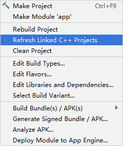
4、修改LandmarkTracking.h文件
由于将opencv3替换成最新版的opencv4，源代码LandmarkTracking.h有一下几点需要修改。
a、在tracking_corrfilter函数中存在下图三处地方需要修改
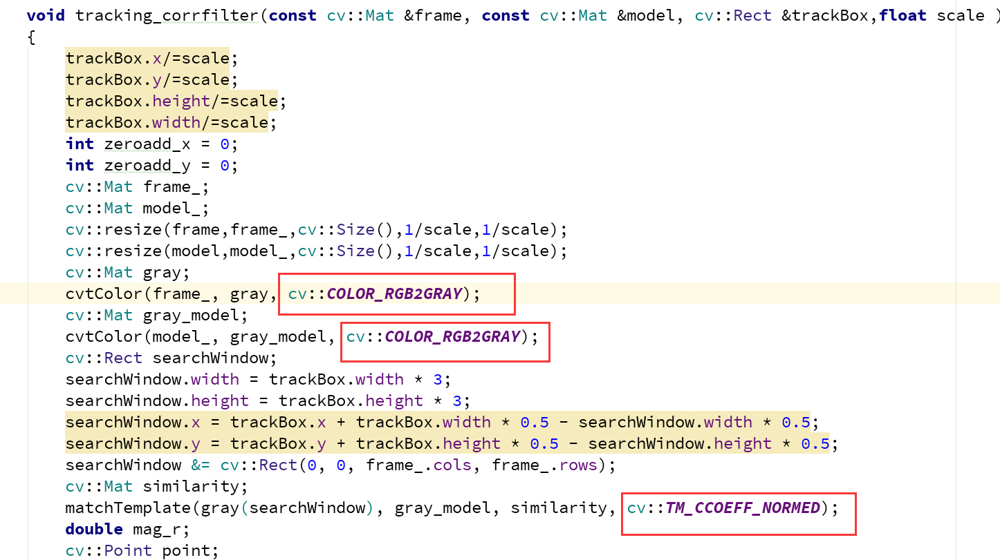
b、在update函数中也存在下图三处地方需要修改
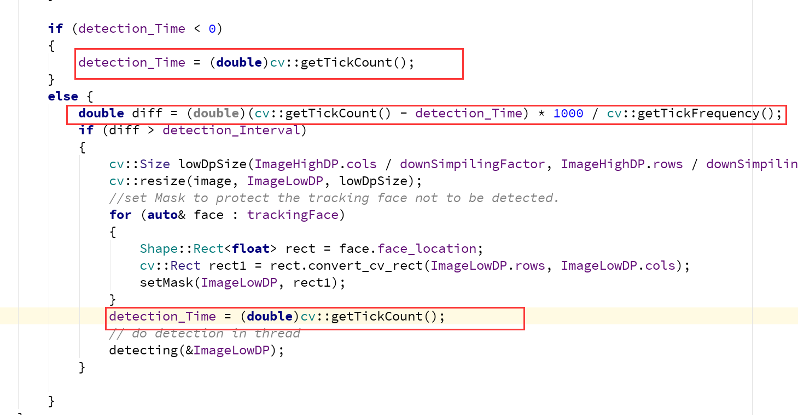
5、修改tracking-lib.h文件
a、在Java_trackingsoft_tracking_FaceTracking_initTracking函数中也存在下图一处地方需要修改
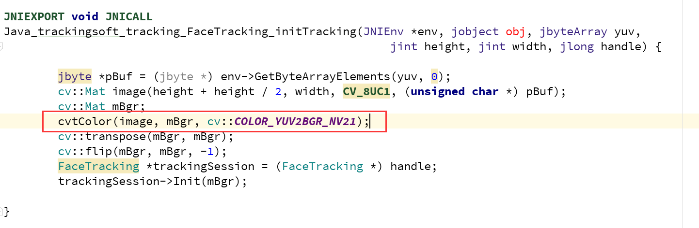
b、在Java_trackingsoft_tracking_FaceTracking_update函数中也存在下图一处地方需要修改
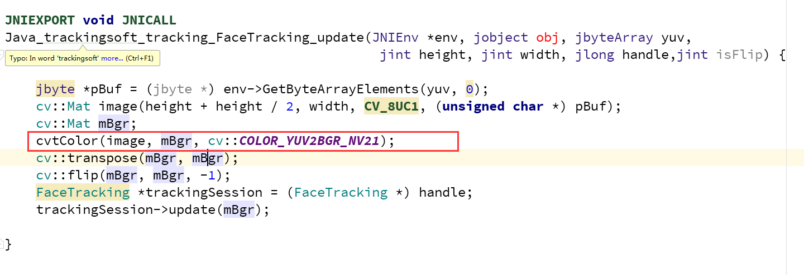
6、编译
完成以上所有操作之后，点击Build->ReBuild Project 即可
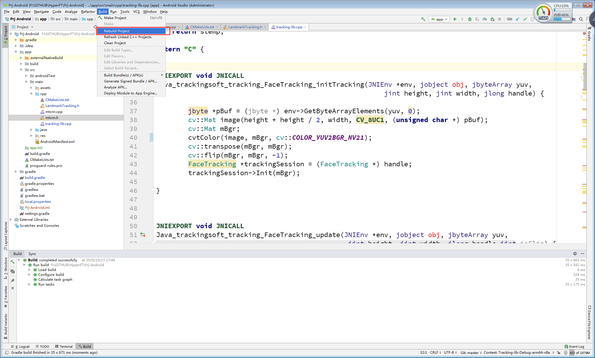
编译成功之后便会在Prj-Android\app\build\outputs\apk\debug的路径中生成一个app-debug.apk
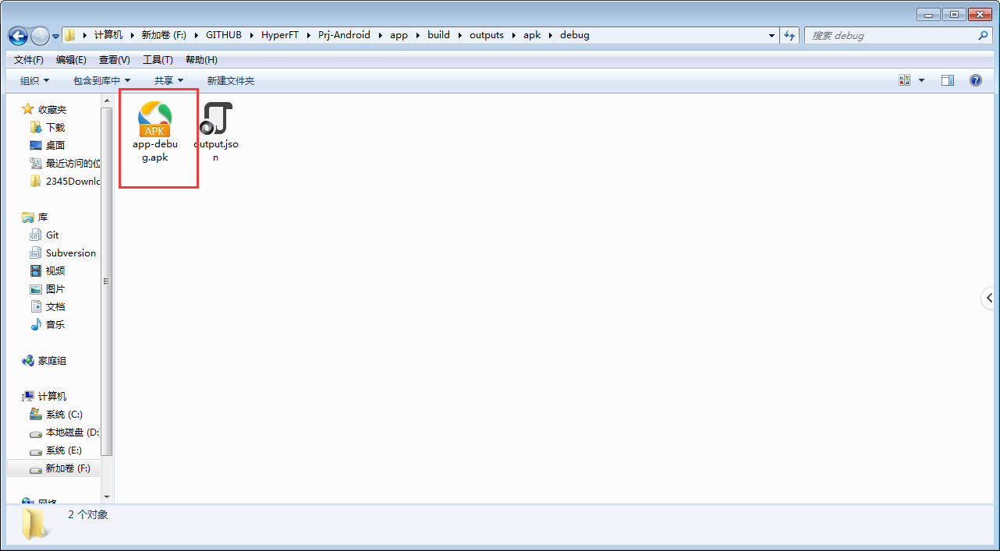

zeusee.com 智云视图